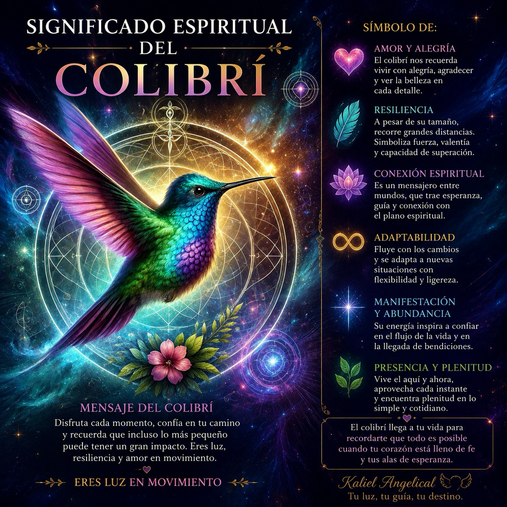

Centro holístico en Medellín. A través de terapias alternativas, meditación y lectura de oráculos, te acompaño a destrabar tus bloqueos, sanar tus emociones y reconectar con tu propósito de vida.
Reservar una sesión
Kaliel Angelical es un espacio dedicado al despertar de la conciencia, la sanación integral y el crecimiento espiritual. Nuestra misión es brindar herramientas terapéuticas y educativas que permitan a cada persona conectar con su esencia, fortalecer su bienestar y descubrir su propio potencial de transformación.
A través de terapias energéticas, orientación angelical, numerología, Reiki, cromoterapia, trabajo con cuarzos, talleres y programas de formación, acompañamos procesos de equilibrio físico, emocional, mental y espiritual.
Creemos que cada ser humano posee una luz interior única. Por ello, en Kaliel Angelical promovemos el amor propio, la armonía, la conexión con los ángeles y el desarrollo de dones y talentos espirituales, ofreciendo un espacio de aprendizaje, apoyo y evolución consciente.
Espacios creados para tu bienestar integral. Las sesiones pueden ser presenciales o a distancia.
Recibimos la guía necesaria para entender tu presente, destrabar aquello que te preocupa y tomar decisiones conscientes.
Consultar →Limpieza y armonización de tus chakras y campo áurico para restablecer tu vitalidad, reducir el estrés y sanar tus emociones.
Consultar →Limpieza energética para hogares y lugares de trabajo, liberando cargas densas y atrayendo luz al entorno.
Consultar →Si sentís el llamado, los ángeles ya están trabajando para vos. Escribime para agendar una sesión o sacarte cualquier duda.